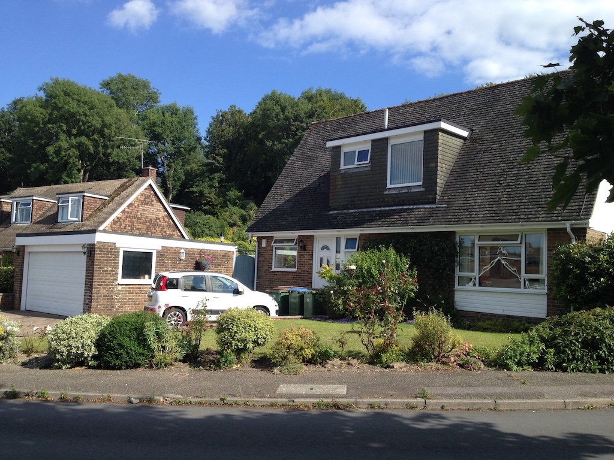

We had been talking about downsizing for some time, but only talking. We agreed that before it becomes too difficult we should find a smaller house with a smaller garden that was closer to local amenities. I had been looking casually for a small building plot so that we could build (or have built) a house to our own taste. What that is might have been debatable, but it would be something with a low environmental footprint. For example, screw piles rather than concrete footings, timber rather than brick/block, triple-glazed windows and lots of insulation. Power would be ground source heating and/or photovoltaic panels.
However, finding such a plot proved difficult!
Then, in September 2018 a friend of Angela's phoned to say that a small house near them, with a large garage, was about to come on the market and she thought it might be the sort of thing we were after. So we decided to take a look. Although it ticked most of the boxes (smaller, small garden, nearer the heart of Steyning and in quite good condition, if somewhat dated) it was a 1970's house on a large development, neither of which I really wanted.
So we arranged to view it, even though we hadn't looked at any other houses. After a second viewing we made an offer and put our house on the market! We couldn't quite believe what we'd done. Just the thought of moving, let alone to a significantly smaller house, was quite a daunting prospect.
That was early September, but it was the end of April before we actually moved. It took so long because our first buyer could not in the end raise the finance. During the process we got a structural survey of the extension on Kingsmead Close and made that available to a new buyer. Then, just before we were due to exchange contracts, the boiler failed! So we did what we should have done years ago and had a new boiler installed.
So on April 30th 2019 we moved into 31 Penlands Vale. We had spent many weeks slowly divesting ourselves of large pieces of furniture, of things that we will not need in our smaller home and items that we really do not want (in addition to the 'rubbish' that we had collected). One of the problems was that when we disposed of a piece of furniture we had to empty its contents, some to charity shops and some into packing boxes. Similarly, the teak boxes had to be emptied before I could take them off the wall. Originally I had wanted to give them away and have a change, but Angela thought that they are the same age as the house and so would fit well. It took a lot of effort to put them up, but she was right, they look better than they did in Kingsmead Close.
Before we exchanged contracts we went to check on the house. It was all in good condition, but it was quite a shock. It was much smaller than we had remembered! We began to wonder if we had done the right thing.
The removal team was very good, but we ended up with cardboard boxes piled everywhere. Since we had put the boxes that we packed in the dining room, these all ended up in the very small dining room. We could hardly see out of the window!
It took a lot of effort, but surprisingly little time to get the boxes unpacked and the teak boxes on the wall. Luckily the cables plugged into the FreeSat box and it worked. Similarly, the broadband worked, although we later had some problems with it and the cable was reconnected. Surprisingly we fitted quite well and the house works well for two people.
We got the sliding patio door sliding again and then things started going wrong. Firstly the oven element broke and then the fridge/freezer stopped working. It was a very practical appliance, but must have been old since we couldn't buy one of a similar size. So we brought the spare fridge in from the garage and bought a table-top freezer to stand on top. Our aim is to refit the kitchen in the New Year. However, our first major change was to the bathroom, since it had a bath, but no shower. Fitting one was problematic, so we decided to have it completely refitted.
The work started on Monday 21st October. Our expectation was that the job would take a week to complete, perhaps two. This was based on the fact that the two bathrooms in Kingsmead Close each took a week. It actually took seven weeks! The plumber seemed diligent, but slow; the plasterer's car was damaged and it took a few days for him to get some alternative transport; the shop supplying the 'bits' left things off and so they had to be ordered. So the thought of replacing the boiler, laying new flooring in the kitchen, dining room and hall and refitting the kitchen is viewed with some trepidation! And we haven't even started seriously thinking about replacing windows and adding insulation to the loft.
In early January 2020 we decided that it was time to start thinking about refitting the kitchen. We looked at web sites and collected (very thick) brochures from local suppliers. WE went to Howdens, who had supplied our new kitchen in Kingsmead Close, to Wickes, who have created a much enhanced kitchen showroom, to Wren, who have a very large showroom at Lyons Farm, and to an independent supplier, Freestyle, at Broadwater. Although the offering from the large suppliers looked extensive, once we filtered the choice on a few of our wishes we found that the choice was actually somewhat limited. Alan said that Wren were poor on resolving any issues so we ended up getting a design and quote from Howdens and from Freestyle. There was little we could do with the basic layout, so they were very similar and, in fact, similar in price. Freestyle would manage the fitting etc. and seemed to have more flexibility in the various combination of options, so we decided to go with them.